Antivirus¶
They are usually fraught with false-positives because we live in a world of complex greys, not black and white.
We are facing significant challenges due to the stringent policies of antivirus companies. Antivirus software is a critical tool for safeguarding Windows systems against viruses, trojans, and other malicious threats. However, the aggressive approach of some antivirus companies towards virus and trojan protection often results in legitimate software, such as Tactical RMM, being misclassified as malware.
For instance, Tactical RMM is designed to assist IT professionals and system administrators in managing and monitoring systems remotely. This, while essential for operational efficiency and security, can sometimes be flagged by antivirus solutions as potential threats. This classification occurs despite the primary use of Tactical RMM for legitimate, constructive purposes. The rationale behind such decisions is that if a tool could potentially be leveraged for malicious activities, it must be treated as a threat. This stance overlooks the reality that the majority of users employ these tools for valid and positive reasons.
Some antivirus companies adopt a slightly more nuanced approach by labeling these tools as "Security Threats" or "Riskware." While this is a less severe classification than labeling them as viruses or trojans, it still hinders users by quarantining or deleting the tools, effectively preventing their use. Moreover, the distinction between "Virus" and "Riskware" is lost on many users, leading to confusion and undue concern and why do they not class other RMMs the same?
The issue of overzealous protection is not unique to Tactical RMM. Other developers, both small and large, encounter similar problems with antivirus software flagging their products without clear justification. Examples include utilities that do not even involve password recovery or system monitoring but still face unwarranted scrutiny and restriction. Infact we can see NirSoft 15 years ago wrote a similar blog about this.
The challenge extends beyond individual developers to affect the broader ecosystem. Small developers, in particular, struggle with the ramifications of these false positives, lacking the resources and legal clout that larger companies possess to quickly address and resolve these issues.
To mitigate these challenges, it is crucial for both users and developers to engage more proactively with antivirus companies. This involves reporting false positives, providing feedback on software classifications, and advocating for a more balanced approach that recognizes the legitimate use of Tactical RMM. Ultimately, greater awareness and communication can help ensure that essential tools are not unjustly penalized, supporting a more secure and efficient digital environment. Remember YOU are the antivirus companies customer, YOU by reporting these false positives can help!
At the moment, Microsoft Windows Defender thinks a go executable with virtually nothing in it is the "Trojan:Win32/Wacatac.B!ml" virus https://old.reddit.com/r/golang/comments/s1bh01/goexecutables_and_windows_defender/.
- Windows Defender ranks as one of the top AVs and can be largely controlled via Tactical. Read more about Defender detection rates etc here.
- Use the
Defender Status Reportscript (Task > Run Daily - Use Automation manager) to monitor machines: https://github.com/amidaware/community-scripts/blob/main/scripts/Win_Defender_Status_Report.ps1. - If you want to lock a system down, run the
Defender Enablescript (test in your environment, because it can stop Microsoft Office from opening docs among MANY other things) that will turn on Protected Folders: https://github.com/amidaware/community-scripts/blob/main/scripts/Win_Defender_Enable.ps1 and you will be extremely safe. Annoyed, and unable to do lots of dangerous things like opening files from the internet and email...but safe. Use this as an Exclusion List for Protected Folders items.
Be aware there is also a PowerShell script to add TRMM exclusions specific to Windows Defender.
Note
If you need to use 3rd party AV, add the necessary exclusions (see below for examples) and submit the exes as safe.
Bitdefender Gravityzone¶
Admin URL: https://cloud.gravityzone.bitdefender.com/
To exclude the Tactical and MeshCentral agents, go to Policies > {policy name} > Antimalware > Settings > Custom Exclusions.

Add the following exclusions. The ATS/IDS module does not support file exclusions, only folder exclusions.
| File | Excluded Items | Modules | Notes |
|---|---|---|---|
| Folder | C:\ProgramData\TacticalRMM\ |
On-demand, On-Access, ATC/IDS | All TRMM scripts are saved here to run |
| Folder | %ProgramFiles%\Mesh Agent\ |
On-demand, On-Access, ATC/IDS | Excludes Mesh Agent from ATC/IDS |
| Folder | %ProgramFiles%\TacticalAgent\ |
On-demand, On-Access, ATC/IDS | Excludes TacticalAgent from ATC/IDS |
| Process | %ProgramFiles%\Mesh Agent\MeshAgent.exe |
On-Access, ATC/IDS | Excludes Mesh Agent service (process) from ATC/IDS |
| Process | %ProgramFiles%\TacticalAgent\tacticalrmm.exe |
On-Access, ATC/IDS | Excludes tacticalrmm service (process) from ATC/IDS |
| File | %ProgramFiles%\Mesh Agent\MeshAgent.exe |
On-demand, On-Access | This may not be needed since the entire folder is excluded |
| File | %ProgramFiles%\TacticalAgent\tacticalrmm.exe |
On-demand, On-Access | This may not be needed since the entire folder is excluded |
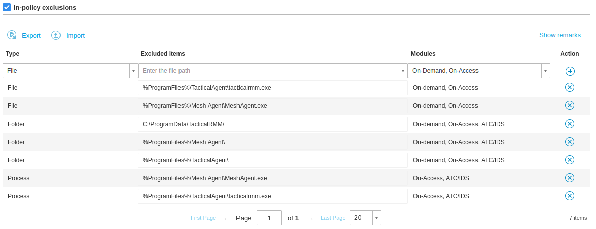
To exclude URLs: Policies > {policy name} > Network Protection > Content Control > Settings > Exclusions
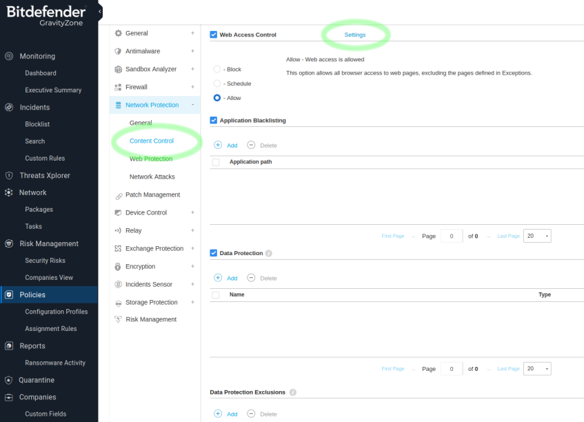
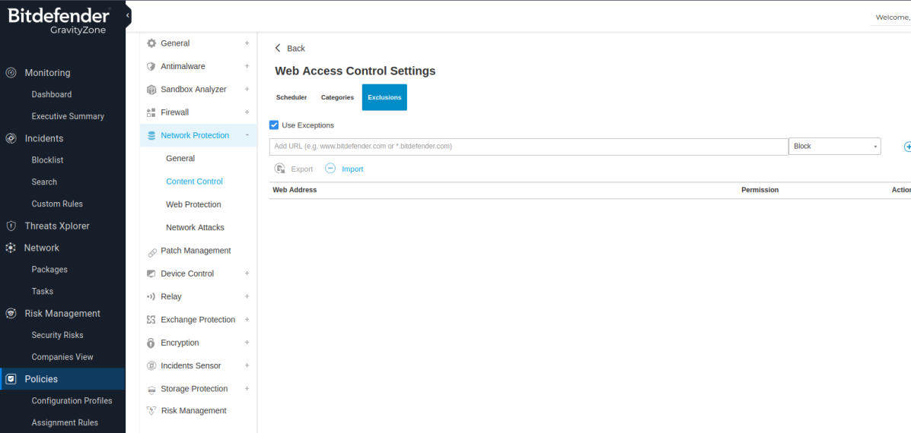
Webroot¶
Admin URL:

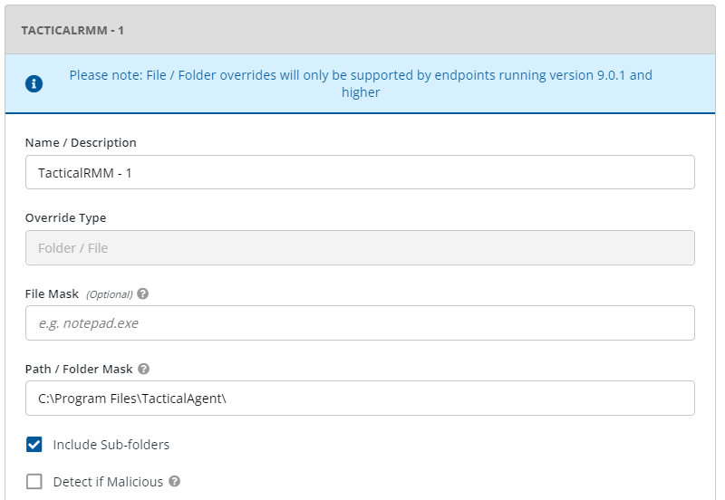

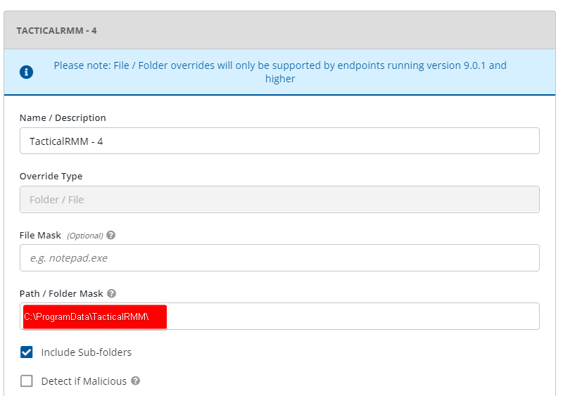
Sentinel One¶
First log into your SentinelOne account
Go To Sentinels (from the sidebar) > Exclusions > New Exclusion > Create Exclusion
 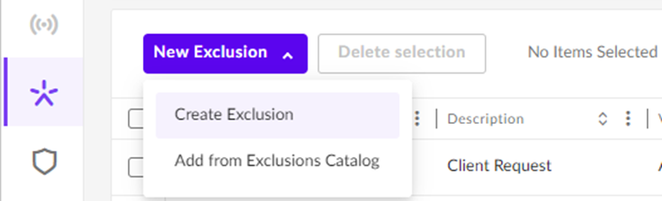
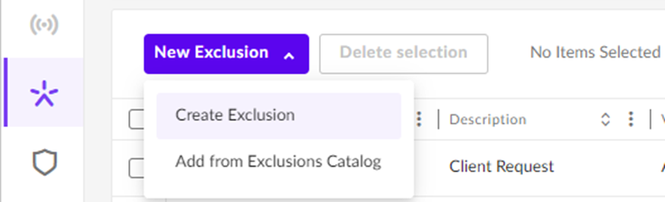
Choose the Path option in the New Exclusion window 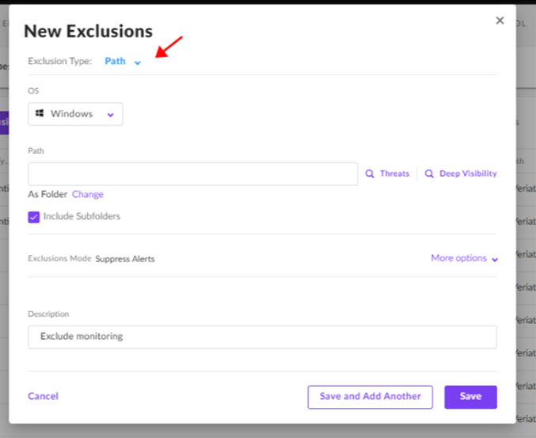
Add the Following Paths:
C:\ProgramData\TacticalRMM\%ProgramFiles%\Mesh Agent\%ProgramFiles%\TacticalAgent\
Choose Suppress Alerts in Exclusions mode

Save and Apply Policy to Devices
Sophos¶
Sophos Central Admin¶
Go To Global Settings > General > Global Exclusions > Add Exclusion


Sophos XG Firewall¶
Log into Sophos Central Admin:
Admin URL: https://cloud.sophos.com/
Log into the Sophos XG Firewall.
Go To System > Hosts and services > FQDN Host Group and create a new group.

Go To System > Hosts and services > FQDN Host.
Create the following 3 hosts and add each to your FQDN host group.
- api.yourdomain.com
- mesh.yourdomain.com
- rmm.yourdomain.com (Optional if you want your client to have GUI access to Tactical RMM)
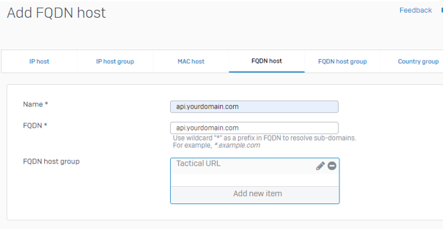
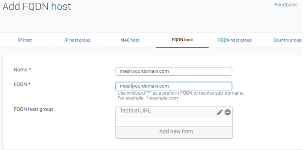
Go To Hosts and services > Services and create the following services:
- Name: Tactical-Service-443
- Protocol: TCP
- Source port: 1:65535
- Destination port: 443
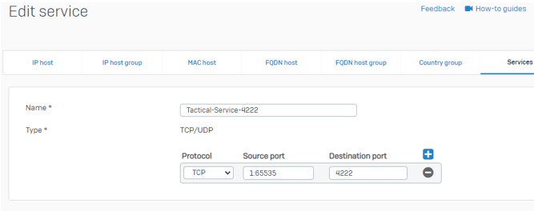
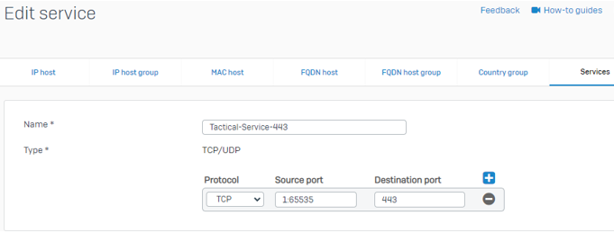
Go To Hosts and services > Service group and create the following service group:
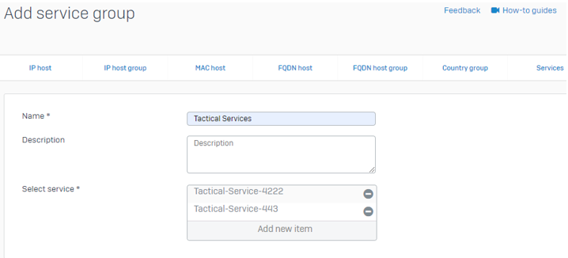
Go To Protect > Rules and policies and add a firewall rule:
- Rule name: Tactical Rule
- Rule position: Top
- Source zones: LAN
- Source networks: ANY
- Destination zones: WAN
- Destination networks: Your FQDN Host Group
- Services: Tactical Services
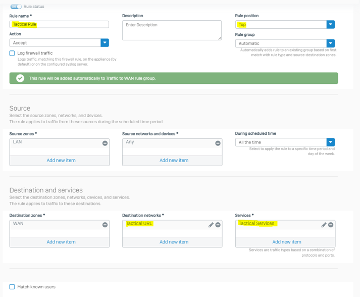

Optionally select Log Firewall Traffic checkbox for troubleshooting.
ESET PROTECT Console¶
There are three areas where you need to configure exclusions:
-
Detection Engine > Performance Exclusions 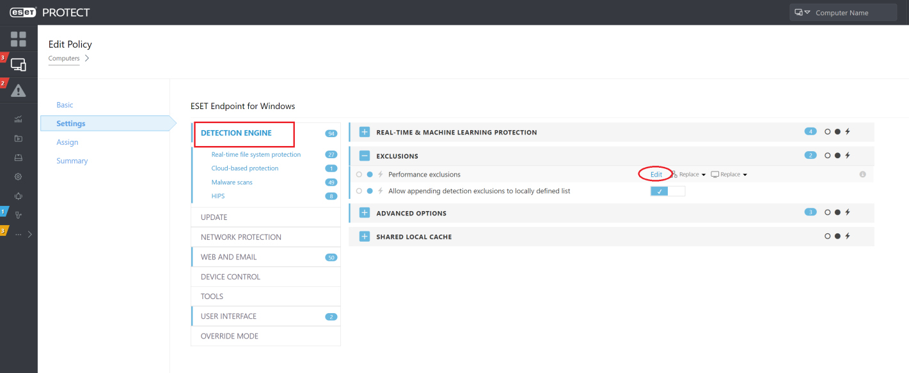

-
Web Access Protection > URL Address Management > List of addresses excluded from content scan 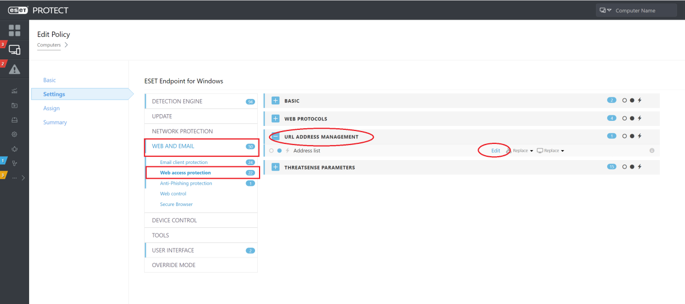


-
Web Access Protection > URL Address Management > List of allowed addresses
 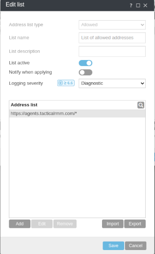
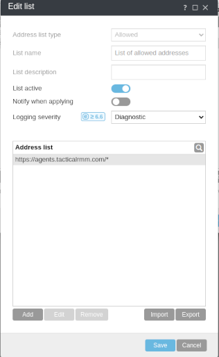
UTM Filter Bypasses¶
Use the below if your UTM blocks installation of Tactical RMM
^https?://([A-Za-z0-9.-]*\.)?tacticalrmm\.com\.?/